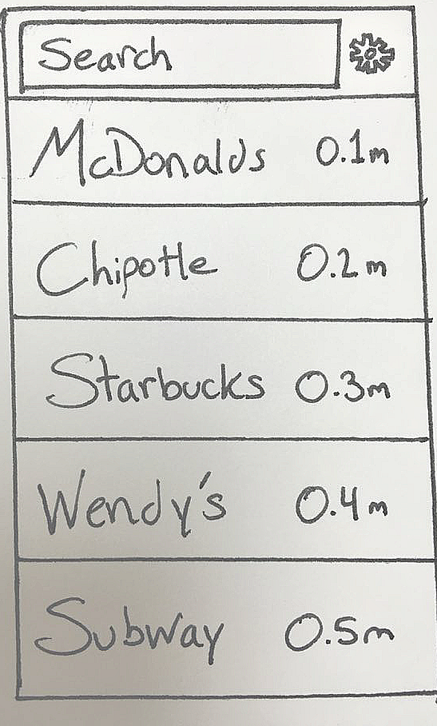

What is Point?
Point directs you to where you want to go on iPhone
and Apple Watch with a digital smart compass.
There are several problems with current map
interfaces:
1. Map interfaces don't display well on smart watches since they're so small.
2. People don't want to know what to do three or four blocks from now.
People want to know which direction to walk now.
Current map apps show you entire route, but you don't need that once you're
on your way. Point solves this problem.
{kind=link}
{kind=link}
{kind=link}
Usability
We made sure that our final design employed good usability. It has high learnability since it is super easy to use and for new users to learn how to work the interface. As shown in the invision, the app opens up and prompts the user to search a location. Once the user has searched a location, a list of places related to that search appear, at which point the user can select the desired option. Once that option is selected, it leads the user to the compass where it will direct him/her where to go. The watch app that accompanies this app is just as intuitive: if you search and select on iphone it will automatically open on your apple watch, however you also have the option to use the built in microphone on the watch so that you can simply say where you are trying to go and then the watch will lead you there. The interface also employs high memorability because there is a consistent design throughout that is very difficult to forget. The consistent red color scheme and the simple headers and simplistic designs of both the mobile and watch version make it easy for people to remember this design. Finally, efficiency is high because as soon as the app opens up you are able to search and then go. The motto of this interface is “Search. Point. Go” which is a good representation of just how efficient this design really is. Error frequency and severity is very low since there are not many mistakes that can be made using this interface, and if any are made then they are easily fixable such as you simply needing to click the back button to restart your search. Overall we tried to create a feeling of subjective satisfaction when people used this interface, and because of its ease of learning and intuitive design, we believe that there is much subjective satisfaction. Therefore, a lot was considered in the design process of Point to make sure that the final version had good usability.
Generation 1.1 - List View
Generation 1.1 consists of a radius bar,
which adjusts the radius in which to look for coffee
shops. When the radius is adjusted, the list of
available places is updated. Once a destination is
picked, the app shows the compass view pointing to
the destination, showing total distance and estimated
time of arrival.
A list of venues to choose from seemed appealing to
users as it is a familiar interface that would
maximize the learnability, and overall usability, of
the application as a whole. However, since users may
not know beforehand whether a desired location was
within a specific radius (although they could give
a rough estimate), the radius bar was less useful
than initially perceived. For example, when the radius
specified was too small, users were not able to find
the desired destinations in the results list.
Oppositely, when the radius was too big, users
stated that it took too long to find a specific
place in the larger list of results or compare
two results in different parts of the list to
each other.
Generation 1.2 - Map View
Generation 1.2 consists of a map on which available
coffee shops appear. The user selects a pin on the
map, then the app shows the compass view pointing
to the destination, showing total distance and
estimated time of arrival.
Users stated that the map view solved the distance
issue, since it is more visual. However, searching
for specific places proved to be confusing for
users not familiar with the general map type of
orientation.
Generation 2 - Combination View
Users of Generation 1.1 wanted an easier way to
navigate several options, and users of Generation
1.2 helped us realize that there was a trade-off
between simplicity and functionality in that the map
interface was simple but assumed familiarity and
would make looking for locations much more difficult,
so we decided to merge aspects of both in the second
iteration. This generation features a map view as
the main screen, with a list view accompanied by a
radius bar on the bottom that pops up. Accommodating
both types of users allowed us to greatly increase
the usability of our application across both
groups, and increased the overall efficiency of
the interface.
While the combination of the two features enhanced
the overall experience of the app, many users
expressed a strong desire for a search bar. Their
arguments were that it is the fastest way to search
for a specific location, and all users know how to
use a search bar.
Generation 3 - Search Bar / Watch
